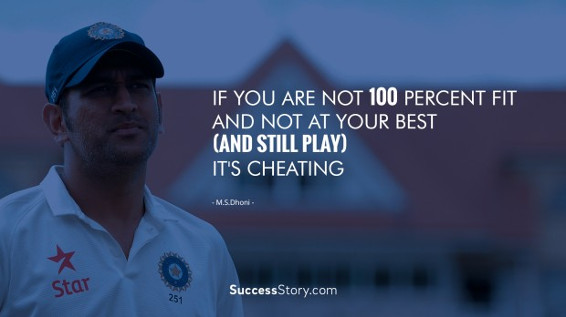

[He was selected in India's 15-man squad for the 2015 Cricket World Cup held in Australia and New Zealand. He made his Test debut for India against England on 13 February 2021, where he took 7 wickets]

[Bowlers chokes pakistan before Healy powers Australia to one sided-win]

|  | Captain Cool is the story of M.S. Dhoni, Indian cricket's poster boy, it is also the heartwarming account of the life of a young man who won India the World Twenty20 in 2007 and the 50 over World Cup title in 2011 but can still tell his throngs of admirers, 'I am the same boy from Ranchi'. |